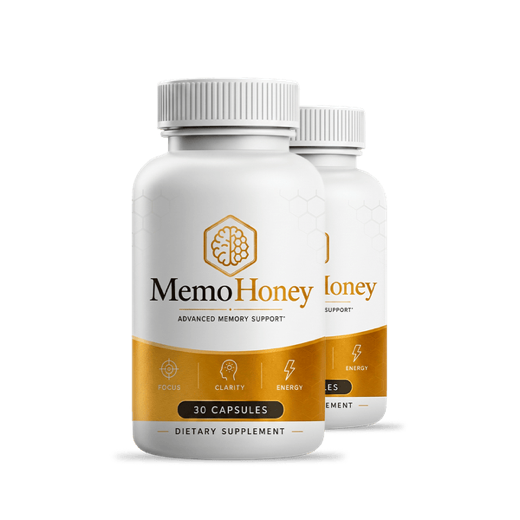
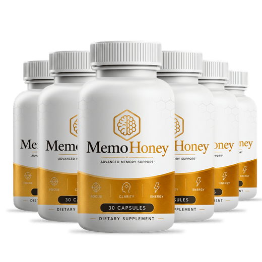
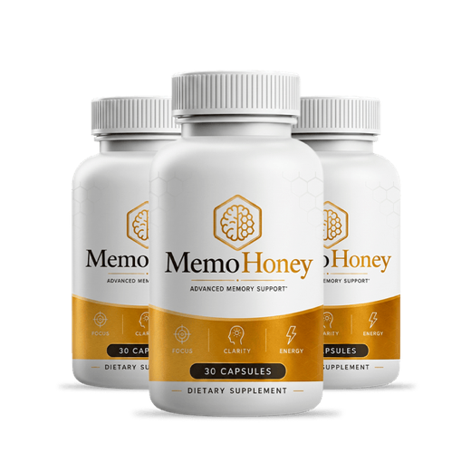

MemoHoney Review 2026: The Real Label, the Real Price, and Who It Actually Suits
MemoHoney takes a different route to the same destination than almost everything else in the memory aisle. Instead of loading up on bacopa and adaptogens, it bets on cerebral blood flow. We pulled the actual supplement facts panel, checked every disclosed milligram against the research, and read the refund policy line by line.

Memory Lab verdict on MemoHoney
The easiest formula in the category to actually stick with, built on a mechanism that is real but dosed conservatively.
Key takeaways
- It is a circulation formula, not an adaptogen formula: four of the seven dosed ingredients (L-arginine, L-arginine AKG, L-citrulline HCl, L-citrulline malate) work by raising nitric oxide, which widens blood vessels.
- Seven of twelve ingredients carry a milligram amount. That beats any proprietary-blend product, but falls short of a fully open label.
- Ginkgo, bacopa, astaxanthin, honey and blueberry appear without doses, and those are precisely the ingredients with published memory research. You cannot verify them.
- One capsule a day. The best adherence in the category, and adherence is the single biggest reason supplement trials fail in real life.
- About $1.63 a day at six bottles, with a 60-day guarantee. Competitive pricing for a daily formula.
- The refund is stricter than the marketing implies: email request, return all bottles, you pay return shipping.
- Speak to your doctor first if you take blood thinners, blood pressure medication or nitrates. Ginkgo and the nitric oxide ingredients both matter here.
Most memory supplements are variations on one recipe: bacopa for consolidation, an adaptogen for fatigue, maybe phosphatidylserine or citicoline for the membrane story. MemoHoney is not that. Strip away the branding and what you find is a formula organised around a single question: can you improve cognition by improving blood flow to the brain?
That is a serious question with a serious literature behind it. Cerebral perfusion declines with age, and reduced blood flow tracks with cognitive decline in imaging studies. It is also, incidentally, the mechanism ginkgo biloba has been studied for since the 1990s. So the thesis is sound. The question this review answers is whether the execution matches it.
What is MemoHoney?
MemoHoney is a once-daily capsule marketed as "Advanced Memory Support," aimed at adults noticing slower recall, more word-finding pauses and a general sense that focus takes more effort than it used to. Each bottle holds 30 capsules and the serving is one capsule daily, so a bottle is exactly a one-month supply.
It is stimulant-free, manufactured in the United States in an FDA-registered facility, and sold direct to consumers online rather than in retail. It is worth being precise about that FDA wording, because supplement marketing routinely blurs it: registering a facility with the FDA is not the same as the FDA approving a product. No dietary supplement is FDA approved, and any page claiming otherwise about any brand is misinforming you.
One naming note, since the product invites the assumption: honey is on the ingredient list, but without a disclosed amount and low in the ordering. The name is branding, not a description of the formula.
The MemoHoney supplement facts panel, in full
Here is the complete label with every disclosed amount, and next to it the amount used in the research each ingredient is included for. This is the section that answers the actual question.
| Ingredient | Per capsule | Studied at | Assessment |
|---|---|---|---|
| L-Arginine Nitric oxide precursor |
200 mg | 3,000 to 6,000 mg orally | Well below Oral arginine is also heavily broken down before it reaches circulation |
| L-Arginine AKG (2:1) Same precursor, different salt |
200 mg | Same pathway as above | Duplicate mechanism |
| L-Citrulline HCl Converts to arginine; better absorbed |
100 mg | 6,000 to 8,000 mg in blood flow trials | Well below |
| L-Citrulline Malate Same compound, bound to malic acid |
100 mg | Same pathway as above | Duplicate mechanism |
| Beta-Alanine Muscle carnosine buffer |
40 mg | 3,200 to 6,400 mg for its studied effect | Token amount No memory rationale at any dose |
| Niacin (vitamin B3) Energy metabolism cofactor |
7.5 mg (47% DV) | Standard vitamin intake | Sensible Low enough to avoid the flushing problem |
| Calcium (as calcium carbonate) Also a standard capsule flow agent |
18 mg (1.5% DV) | 1,000 to 1,200 mg daily intake | Nutritionally negligible |
| Ginkgo Biloba The classic cerebral blood flow botanical |
Not disclosed | 120 to 240 mg/day of standardised extract | Unverifiable |
| Bacopa Monnieri Best-evidenced memory botanical |
Not disclosed | 300 mg/day over 12 weeks | Unverifiable |
| Astaxanthin Carotenoid antioxidant |
Not disclosed | 6 to 12 mg/day | Unverifiable |
| Blueberry Anthocyanin source |
Not disclosed | Trials use whole fruit or concentrated powder in grams | Unverifiable |
| Honey The name ingredient |
Not disclosed | No established cognitive dose | Branding ingredient |
| Disclosed active material | ≈ 665 mg | 1 capsule daily · 30 capsules per bottle · stimulant-free | |
What that table actually means
The formula has one engine, listed four times. L-arginine, L-arginine AKG, L-citrulline HCl and L-citrulline malate are four entries pointing at the same destination: more nitric oxide, wider blood vessels, better perfusion. Splitting one mechanism across four line items makes an ingredient panel look richer than it is. Added together, the whole nitric oxide contingent is 600 mg, against the several grams used in circulation research.
To be fair to the product, that comparison is not perfectly clean. Most of the big-dose citrulline research measures athletic performance and acute blood flow, not daily cognitive endpoints, and a small daily dose taken for months is a genuinely different exposure than a single pre-workout serving. But "different context" is not the same as "supported," and there is no published trial showing that 600 mg a day of mixed arginine and citrulline changes anything about memory.
Beta-alanine is the one ingredient we cannot construct a defence for. It buffers acid in muscle tissue and is studied for high-intensity exercise endurance. At 40 mg, which is roughly one percent of the dose used in that research, it is neither doing that job nor any cognitive job. It is a label entry.
The undosed five are the frustrating part, because they are the good part. Ginkgo has the largest body of cerebral blood flow research of any botanical and would be the natural anchor of a circulation formula. Bacopa has the strongest memory-specific trial record of anything in the category. Astaxanthin and blueberry anthocyanins both have real, if smaller, literatures. Not one of them carries an amount you can check.
Why do MemoHoney reviews list different ingredients?
If you have read a few reviews already, you have probably seen a formula that looks nothing like the table above. Several pages describe MemoHoney as containing bacopa, L-theanine, ginkgo, rhodiola and phosphatidylserine in 60 capsules at two a day. That is not this product. L-theanine, rhodiola and phosphatidylserine do not appear on the panel at all, and the bottle holds 30 capsules taken one a day.
This is a pattern across the whole category, not something unique to this product: a large share of supplement reviews are produced at volume with plausible-sounding ingredient lists assembled from what a memory formula usually contains, rather than from the actual label. It is worth knowing about because it makes those pages' ratings meaningless, in either direction. When a review cannot get the panel right, the number at the top of it is decoration.
⚠ Check the domain before you order
MemoHoney is sold alongside a cluster of near-identical lookalike domains, several of which differ from each other by a single repeated letter. Ordering from the wrong one can mean no valid order record and no access to the guarantee.
- Read the address bar character by character before entering payment details.
- Expect a one-time charge. If you are presented with a subscription or auto-ship, you are not on the official order page.
- Keep the confirmation email. You need the order number for any refund.
- Ignore any page showing an
FDA Approvedseal or a countdown timer that resets on reload. Neither belongs to a legitimate supplement checkout. - It is not sold on Amazon, Walmart, CVS or GNC. Marketplace listings are resellers or counterfeits, and the guarantee does not follow them.
MemoHoney price and what it costs per day
Three packages, no subscription, one-time charge. Because a bottle is exactly 30 capsules at one a day, the per-day maths is unusually clean:
| Package | Per bottle | Total | Per day | Shipping | You save |
|---|---|---|---|---|---|
| 2 bottles · 2-month starter | $79 | $158 | ≈ $2.63 | + $9.99 | Baseline |
| 3 bottles · 3-month supply | $69 | $207 | ≈ $2.30 | Free (US) | 13% |
| 6 bottles · full protocol (best value) | $49 | $294 | ≈ $1.63 | Free (US) | 38% |

2 Bottles · Starter $79/bottle Check Availability → + $9.99 shipping
6 Bottles · Best Value $49/bottle Claim Discount → Free US Shipping
3 Bottles · Popular $69/bottle Claim Discount → Free US ShippingPrices shown are the manufacturer's current published rates and can change without notice.
On which package to pick, the honest answer depends on what you are testing. If you are buying MemoHoney mainly for the circulation ingredients, those act quickly or not at all, and two months is plenty to find out. If you are buying it for the ginkgo and bacopa side, those are cumulative and eight to twelve weeks is the minimum fair trial, which makes three bottles the realistic floor. The six-bottle price is the only one that gets the daily cost under a dollar seventy, but it commits you to six months of a formula you have not tested yet. Buying three and reordering is the lower-risk path even though it costs more per bottle.
The refund policy, read properly
The guarantee is 60 days from purchase, and that part is straightforward. The terms around it are more demanding than the marketing language suggests, and it is worth knowing before rather than after:
- You request by email, not through a self-service portal.
- You return all bottles, including empty ones.
- You pay the return shipping. On a six-bottle order that is a real cost against a refund.
- Processing runs roughly 5 to 10 business days after they receive the package, so build in the transit time.
- Some versions of the terms also ask that you take the product for at least 30 days before requesting a refund.
None of that is unusual for direct-to-consumer supplements, and it is a real guarantee rather than a decorative one. But "no questions asked" and "return everything at your own expense" are different promises, and you should plan around the second one. Practical version: start the day it arrives, decide by week seven, and leave yourself shipping time inside the 60 days.
How to take it, and what to realistically expect
One capsule daily with water. That is the whole protocol, and it is genuinely the product's strongest feature. Adherence is where most supplement regimens quietly fail, and a single capsule with no timing rules is far easier to sustain for three months than a twice-daily schedule.
Expectations are more complicated, because the formula has two halves that behave on different clocks:
Side effects and who should check with a doctor
MemoHoney is stimulant-free and the doses are conservative, so tolerability is one of its better attributes. The realistic considerations:
- Niacin flushing. A warm, tingling flush across the face and neck. It is dose-dependent and 7.5 mg is low, so this is much less likely here than with high-dose niacin products, but it is the most predictable effect on the label.
- Mild digestive discomfort, the usual first-week adjustment. Taking the capsule with food generally resolves it.
- Blood pressure. The nitric oxide ingredients work by dilating blood vessels. At these amounts a meaningful drop is unlikely, but the mechanism is the point of the formula, so it is worth flagging.
Speak to a physician before starting if you: take blood thinners or antiplatelet drugs such as warfarin, aspirin or clopidogrel (ginkgo has a documented interaction and is commonly advised against alongside them); take blood pressure medication or nitrates such as nitroglycerin, or PDE5 inhibitors like sildenafil (all act on the same vasodilation pathway); have a bleeding disorder; are scheduled for surgery within two weeks; or are pregnant or breastfeeding.
And the point no supplement page should skip: if your memory changes are sudden, worsening, or interfering with daily life, that is a medical appointment, not a purchase decision. Our guide to separating normal aging from something that needs evaluation covers where that line sits.
MemoHoney vs. Prevagen, Neuriva and Ginkgo on its own
The comparison that matters is not who claims more, it is what mechanism each one bets on and how much of the label you can actually verify.
| Product | The bet | Doses disclosed | Daily | Guarantee |
|---|---|---|---|---|
| MemoHoney | Cerebral blood flow (nitric oxide + ginkgo) | 7 of 12 | 1 capsule | 60 days, return required |
| Prevagen | Apoaequorin, a jellyfish protein | Yes (single ingredient) | 1 capsule | Retailer-dependent |
| Neuriva | Coffee cherry extract + phosphatidylserine | Yes | 1 capsule | Retailer-dependent |
| Standalone ginkgo | Cerebral blood flow, single ingredient | Yes | 1 to 2 capsules | Retailer-dependent |
Against the drugstore names, MemoHoney is the broader formula. Prevagen is a single ingredient, apoaequorin, whose marketing drew an FTC and New York Attorney General lawsuit. Neuriva pairs coffee cherry extract with phosphatidylserine and nothing else. Both are easier to buy, since you can put them in a cart at your pharmacy, and both carry whatever return policy the retailer offers rather than a guarantee that travels with the product. MemoHoney gives you more ingredients, more disclosure than a proprietary blend, and a 60-day window that belongs to the seller instead of the store.
The uncomfortable comparison is the last row. If the cerebral blood flow thesis is what attracts you to MemoHoney, a standalone ginkgo biloba supplement gives you that mechanism at a disclosed, research-level dose for less money. What MemoHoney adds is the amino acid pathway, the antioxidants and the convenience of one capsule. Whether that bundle is worth the difference is a fair question, and we would rather you ask it than not.
Pros and cons
MemoHoney
Pros
- One capsule a day, the best adherence in the category
- Seven of twelve ingredients carry a disclosed dose
- A coherent single thesis (cerebral blood flow) rather than a kitchen sink
- Ginkgo and bacopa are both genuinely well-researched inclusions
- Stimulant-free, so no jitters and no interference with sleep
- Niacin kept low enough to avoid the flushing problem
- About $1.63/day at six bottles, competitive for a daily formula
- One-time charge with no auto-ship subscription
- 60-day guarantee, US manufacture in an FDA-registered facility
Cons
- Ginkgo, bacopa, astaxanthin, blueberry and honey have no disclosed dose
- Four of the seven dosed actives share one mechanism
- Nitric oxide ingredients total 600 mg against grams in the research
- Beta-alanine at 40 mg has no memory rationale at any dose
- Calcium at 1.5% DV is functionally a flow agent
- Single-capsule format physically limits how much can be in there
- Refund requires returning all bottles at your own cost
- No published clinical trial on the finished formula
- Sold alongside lookalike domains that are easy to mistake for the official one
- The name implies honey is central; it is a trace, undosed ingredient
Who MemoHoney suits, and who should look elsewhere
It is a reasonable choice if: you want the simplest possible daily habit and know that a two-capsule regimen will not survive your actual life; you are drawn to the circulation angle rather than the bacopa route; you want something stimulant-free you can take alongside coffee; you already have sleep and exercise reasonably handled and want to add one thing on top; and you are willing to run it for a full three months rather than judging it in a fortnight.
Look elsewhere if: you want to verify every milligram against the research, in which case a fully disclosed label serves you better; you specifically want a research-level ginkgo dose, which a standalone ginkgo product delivers more cheaply; you take blood thinners, blood pressure medication or nitrates and have not cleared it with your doctor; or you are hoping a supplement will address a diagnosis. It will not, and nothing in this category will.
The bottom line
MemoHoney gets the strategy right and the execution partly right. Building a memory formula around cerebral blood flow is a legitimate idea with real science behind it, and delivering it in one capsule a day solves the adherence problem that quietly sinks most supplement regimens. Those are real advantages, and the price and guarantee are fair.
What keeps it from scoring higher is that the label's best ingredients are its least accountable ones. Ginkgo and bacopa are the reason to be interested in this formula, and they are the two you cannot check. Meanwhile the four ingredients that are fully disclosed are four versions of the same mechanism at doses well under what the research uses. The result is a product that is easy to take, reasonably priced, plausibly useful, and impossible to verify.
That is a 7 out of 10: worth trying if the format suits you and you go in with calibrated expectations, not worth pretending is more than it is. Give it eight weeks, measure before and after, and keep the receipt.
Check current MemoHoney pricing & availability
Official site only. One-time charge, no subscription, 60-day guarantee. Verify the domain in your address bar before entering payment details.
Frequently asked questions
What is actually in MemoHoney?
Twelve ingredients, seven with a disclosed amount per capsule: niacin 7.5 mg (47% DV), calcium as calcium carbonate 18 mg (1.5% DV), L-arginine 200 mg, L-arginine AKG 200 mg, L-citrulline HCl 100 mg, L-citrulline malate 100 mg and beta-alanine 40 mg. Five more appear without an amount: ginkgo biloba, bacopa monnieri, astaxanthin, honey and blueberry. That is roughly 665 mg of disclosed active material in one daily capsule.
How do you take it and how long does it take to work?
One capsule a day with water, the simplest schedule of any memory formula we have reviewed. The two halves of the formula run on different clocks: the nitric oxide ingredients act acutely, within hours if at all, while ginkgo and bacopa are cumulative and measured in trials at eight to twelve weeks. Plan on about eight weeks of uninterrupted use before judging it.
How much does MemoHoney cost?
Three packages: 2 bottles at $79 each ($158 total, plus $9.99 shipping), 3 bottles at $69 each ($207, free US shipping) and 6 bottles at $49 each ($294, free US shipping). Each bottle is 30 capsules at one a day, so a bottle is one month. That is about $2.63 a day at the smallest package and $1.63 at the largest.
Is MemoHoney a scam?
No. It is a real product with a published supplement facts panel, a named distributor, a working support line and a genuine 60-day refund policy. Two cautions do apply: a cluster of lookalike domains sells it alongside the official site, and ordering from the wrong one can leave you without the guarantee; and several review pages describe a completely different formula from the actual label, listing ingredients like L-theanine, rhodiola and phosphatidylserine that are not on the panel. Check the label yourself and verify the domain before paying.
Does it actually contain honey?
Honey is on the ingredient list but without a disclosed amount, and it appears low in the ordering. Since ingredients are listed by descending weight and about 665 mg of a single capsule is already accounted for, the honey content is a small fraction of the capsule. Treat the name as branding rather than a description of the formula.
What is the refund policy?
Sixty days from purchase, with stricter terms than the marketing implies: request by email, return all bottles including empties, pay the return shipping yourself, and allow roughly 5 to 10 business days after they receive the package. Some terms also ask you to use the product for at least 30 days first. Start the day it arrives and decide by week seven so shipping time fits inside the window.
Are there side effects?
Niacin flushing is the most predictable, though 7.5 mg is low enough to make it uncommon. Mild digestive discomfort in the first week is possible and usually resolves by taking the capsule with food. Because the formula works on vasodilation, speak to a physician first if you take blood thinners or antiplatelet drugs (ginkgo interacts), blood pressure medication, nitrates or PDE5 inhibitors, if you have a bleeding disorder, have surgery scheduled, or are pregnant or breastfeeding.
Is one capsule a day enough?
It depends what you want out of it. One capsule is exactly why adherence is easy here, and a supplement you actually finish beats one you abandon in week three. The trade-off is physical: a capsule holds a limited amount of powder, about 665 mg is already taken by the disclosed ingredients, and the five botanicals share what is left. The format buys you consistency and costs you dose headroom. If you specifically want a research-level dose of a single botanical like ginkgo, a standalone product delivers that more directly.
Related: Ginkgo biloba for memory · Bacopa monnieri benefits · Best memory supplements of 2026 · Do memory supplements work? · Prevagen vs Neuriva